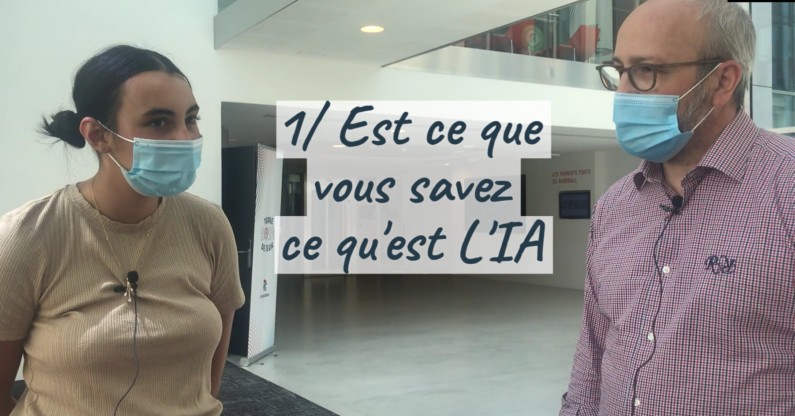
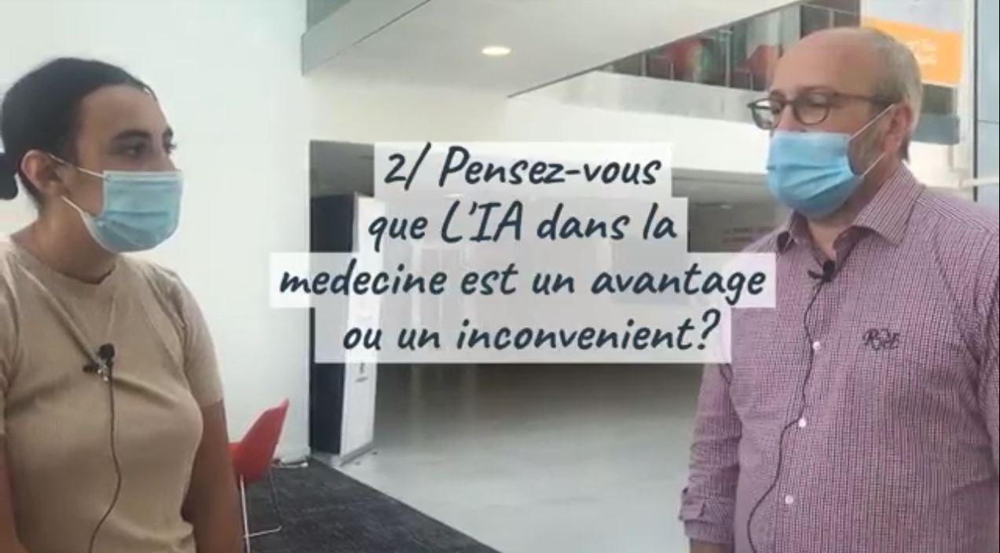
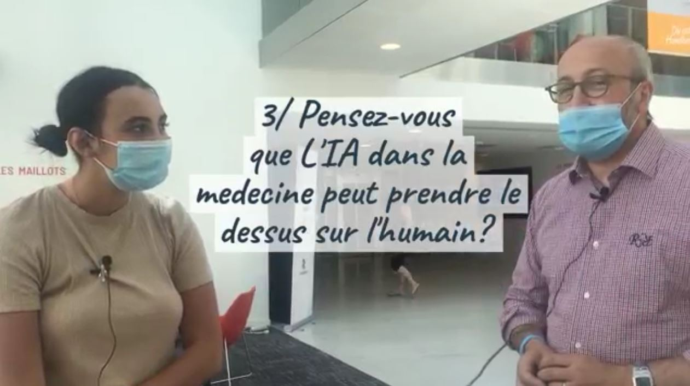
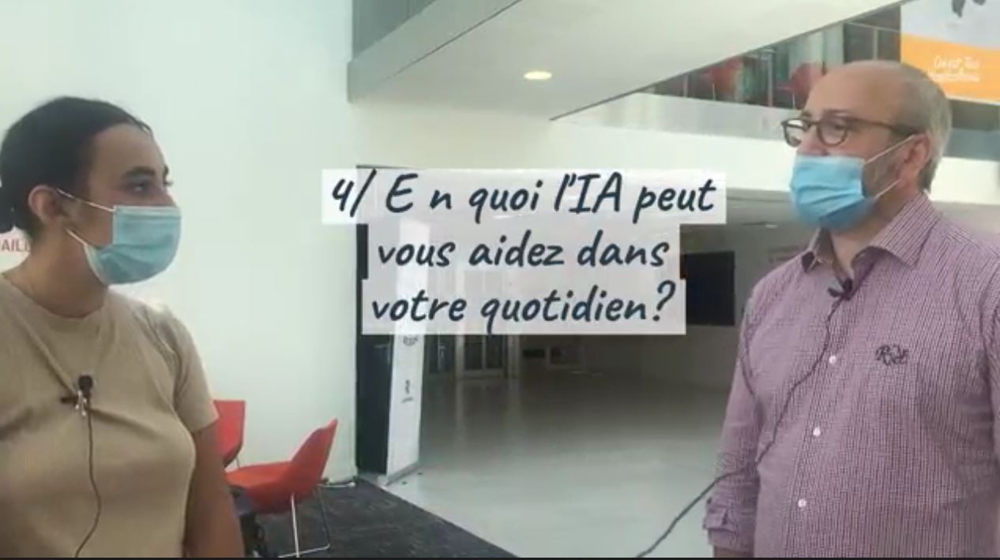

Qu'est ce qu'une IA?

L'IA est elle un avantage ou un inconvénients pour la médecine?

L'IA pourrait elle prendre le dessus sur l'humain?

L'IA peut elle nous aider dans notre quotidien?

Points positifs de l'IA par rapport à la médecine
- Les opérations à distance:
La patiente, hospitalisée au CHU de Strasbourg, a subi une ablation de la vésicule biliaire, alors que le chirurgien se trouvait à New York. Cette opération, baptisée « Lindbergh », réalisée avec succès à plus de 7.000 km de distance a été rendue possible grâce à la télé-chirurgie. Il s'agit d'une première mondiale dans l'histoire de la chirurgie associant la télécommunication à haut débit et la robotique de pointe. - Prédiagnostics de l'IA:
L’intelligence artificielle a fait des progrès énormes dans l’interprétation de l’imagerie médicale. D’après Alastair Denniston (membre de l’Université Hospitals Birmingham et du NHS foundation trust) et son équipe, l’intelligence artificielle est désormais capable de réaliser un diagnostic médical avec autant, voire plus de précision qu’un humain. - l'IA a plus de performance que l'humain:
L'IA biomind conçue par le centre de recherche de l'intelligence artificielle pour les troubles neurologique à l'hopital Beijing Tiantan, à atteint un taux de réussite de 87% contre 66% pour les médecins
Points négatifs de l'IA par rapport à la médecine
- Plus de chomâge à cause de l'IA
L’Intelligence Artificielle sera responsable de la suppression de nombreux emplois. C’est l’argument numéro principal de ses opposants depuis des années. Une étude du cabinet Roland Berger menée en 2014 annonçait une destruction de 1,5 millions d’emplois directs d’ici 2025 dans la zone euro. En France, on parle de 225.000 emplois directs peu qualifiés menacés et presque autant d’emplois indirects. - Robot, apathique
Deuxièmement, l'Homme est capable d'avoir des sentiments, de ressentir des choses, cela est très compliqué à reproduire. Les sentiments sont dus à la nature et non à une programmation, ils ne sont pas les exemples les plus "simples" mais ce ne sont pas les seuls.
Conclusion
Pour conclure, l'IA ne présente pas beaucoup d'inconvénients face aux nombreux avantages mais il faut savoir rester vigilant car aujourd'hui, les progrès militaires s'étendent dans de nombreux domaines, ce qui pourrait entraîner un scénario catastrophique où les robots pourraient prendre le contrôle du monde.